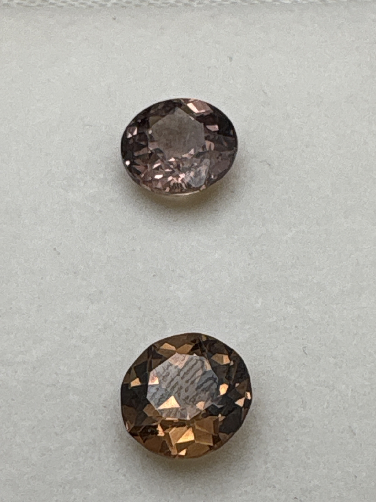

The Gem Drawer › No. 35

Two round garnets labeled color-change; one reads pinker, one more amber.
| Catalogue no. | #35 |
|---|---|
| As labeled | Color Change Garnet (PAIR - 2 stones in this box, see notes) |
| Shape / cut | Round |
| Weight | 1.4 ct |
| Measurements | Not recorded |
| Colour | Pink/mauve to golden-brown depending on stone and angle (labeled color-change - see notes) |
| Clarity / condition | Not recorded |
Interested in this stone, or in the collection as a whole? Terry VanWormer can answer questions about it.
Click here to inquireor email Terry directly at maxrebo34@gmail.com